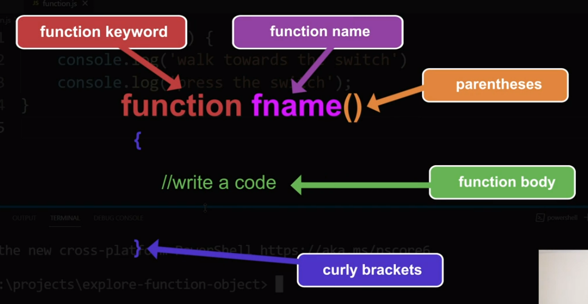
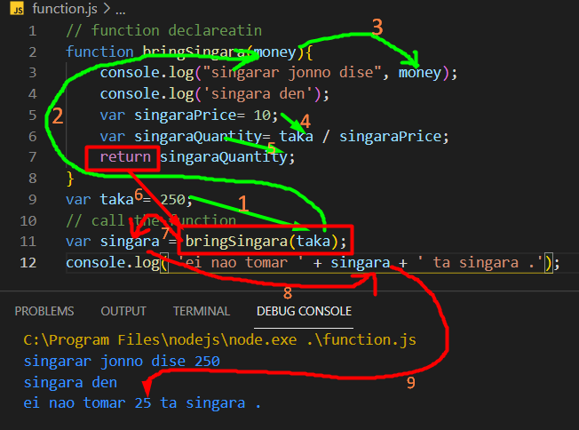

function
ফাংশন আর কিছুই না শুধু একটা কোডব্লক কে নাম দেয়া। পরে কোডের যেকোন জায়গায় সেই নাম ধরে ডাকলে কোডব্লকটি হবে।
নিচে একটা function এর structure দেখানো হল ।

যেমন একটা ফ্যানের সুইচ অন করে ফ্যান চালানো একটা কাজ (এই সম্পূর্ণ কাজটা হল একটা
function ) ।
কোন একজন মানুষ কে আদেশ দিলে সে গিয়ে সুইচ টা অন করবে এবং বাতি জ্বলে উঠবে (কোন একজন মানুষ কে আদেশ করা এটাকে বলে ,
function call )।
function কে ডাকতে হয় তার নাম দিয়ে ,যেমন উপরের function টার নাম হল fname ।
 যেমন এখানে একটা function Declare করে হয়েছে , কিন্তু এটার কোন output নেই , কারন এটাকে call করা হয়নি ।
যেমন এখানে একটা function Declare করে হয়েছে , কিন্তু এটার কোন output নেই , কারন এটাকে call করা হয়নি ।
কোন function কে call করার নিয়ম হল , function এর নাম এবং সাথে first braket ; দেওয়া । (
startFan(); )
যেমন

এই function কে যতবার ইচ্ছে call করা যাবে ।
loop আর function এর মধ্যের পার্থক্য হল
loop একাবার চালু হলে সেটা তার condition অনুযায়ী অনেক বার চলে । এবং loop কে কল করা জায়না ।
function শুদু মাত্র একবার চলে , এবং এটাকে call করা যায় ।
function petameters
প্যারামিটার প্রথম ব্রাকেটের ভিতর রাখতে হবে, এগুলি একধরনের ভেরিয়েবল । যদি কোন প্যারামিটার না থাকে তাহলে প্রথম ব্রাকেটের ভিতর কিছু থাকবেনা
। যদি কোন প্যারামিটার না থাকে তাহলে প্রথম ব্রাকেটের ভিতর কিছু থাকবেনা 
parameter এর সাহায্যে কোন ডাটা function এর বাহির থেকে function এর ভেতরে পাঠানোর কাজ করা হয় ।

এখন যদি এই money নামের function ,, variable টাকে যেকোনো জায়গায় ব্যেবহার করা যাবে ।
যেমন 
অর্থাৎ যখন কোন function কে call করবো তখন তার মধ্যে কোন একটা মান দিয়ে দিতে হবে , সেই মান-ই হবে parameter এর মান ।
আবার চাইলে parameter এর মধ্যে যে মান দিতে চাই । সেটা কোন variable এর মধ্যে রেখেও দিতে পারব ।
যেমন

function retrun
অনেক সময় কোন function থেকে retrun নেয়ার দরকার পরে ।
যেমন ,
সিঙ্গারার দাম ১০ টাকা ,
আমি দোকানি কে দিলাম ২৫০ টাকা ।
তাহলে দোকানি যে পরিমান সিঙ্গারা আমাকে দিবে সেটাই হল উক্ত function এর retrun .

Type of function